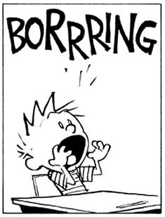

--J. Krishnamurti
“When we imagine that we have found it, we don’t like it.''
--Alan Watts
Imagine living your absolutely perfect life.
Everything exactly right, everything you could ever want.
As vividly as possible, picture the details.
Stay with it.
Notice what happens after minute, or even a few seconds.
The mind... wanders.
It’s not interested. It’s…
BORED.
Whaaat? Even perfect isn’t perfect?
Wow, if the most perfect life is uninteresting, imagine how lacking your actual life must be.
Shouldn’t there be more? Love, success, happiness, money, friends, adventure, fun?
Shouldn’t there be better? Personality, social skills, talents, thoughts, feelings?
This can't be all there is. This can’t be it. I mean, what’s the point?
Though somehow, despite all that protesting and lifelong chasing, it seems we have little actual interest in perfection.
For instance, our eye is perpetually drawn towards what isn't perfect blue sky. Clouds, birds, planes.
Perfectly clear sky? Empty. Uninteresting.
i mean, sure, in our day to day lives we work endlessly towards getting perfection in love, work, looks, talents, health, spirituality. We certainly dream of attaining it.
But actually getting?
Feh.
Humans lean toward dissatisfaction. That’s our default setting.
So we want something going on. The bigger the better.
Because when something's happening,
even if it feels bad,
there’s no question we’re alive, is there?
Could it be that’s what boredom, and the sense of not-enough, is for?
To prove there’s a ‘me’ that’s alive, real, unquestionably…
Here?
I mean, whether its boredom or depression or panic or shame…
Intensity demands attention.
We can't ignore it.
That focus solidifies the sense of ‘Me’. That focus solidifies the idea that what feels bored is ‘Me’.
Boredom does the job.
This isn’t interesting, this isn't enough, this isn't good. I need something more.
Boom. There we are.
It works.
Though if we really do want to feel better, or if we happen to be seeking “enlightenment,”
we might see that we can’t attain either by focusing on the deficiency of this moment.
Because that’s not presence. That’s inadequacy. Inadequacy is, by definition, not enough. And not-enough is never what we want.
So the thing is, what if it doesn’t matter?
What if we could starve dissatisfaction and imperfection of attention?
As in, "Bored? Fine. Wanting something different in this life? OK, yep. Next."
As in, "Hello again, habitual attraction to intensity and story of incomplete self."
Maybe then the thought, “There must be more to life,” can stop being such a big, gotta-fix-this, life-sucking vampire.
Maybe then there's just a fleeting feeling and thought arising.
And that’s about it.
We might begin to see that boredom, emptiness, not-enoughness, is nothing more than a trick of thought.
A meaningless experience, good as any other, not imperfect, not needing changing.
Same life.
Lots less work.
Which just might feel… oh, I don't know...
better.
Not boring.
Huh.
Perfect.
Click here to watch Judy on Buddha at the Gas Pump
Click to watch Judy and Walter have fun chatting about about
nonduality, the self, consciousness, awareness, free will
and other light and breezy stuff
Judy And Robert Saltzman talk nonduality
and again: https://www.youtube.com/watch?v=7fv_vsvaejs
and again: https://www.youtube.com/watch?v=3DAn8Rqg3I0
"You will never be satisfied until you find out that you are what you are seeking. If you want knowledge as an individual, you will not get it here."
--Nisargadatta
"In first grade Mrs. Lohr
said my purple teepee
wasn’t realistic enough,
that purple was no color
for a tent,
that purple was a color
for people who died,
that my drawing wasn’t
good enough
to hang with the others.
I walked back to my seat
counting the swish swish swishes
of my baggy corduroy trousers.
With a black crayon
nightfall came
to my purple tent
in the middle
of an afternoon.
In second grade Mr. Barta
said draw anything;
he didn’t care what.
I left my paper blank
and when he came around
to my desk
my heart beat like a tom tom.
He touched my head
with his big hand
and in a soft voice said
the snowfall
how clean
and white
and beautiful."
--Alexis Rotella
